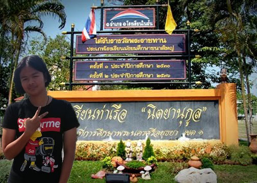

แนะนำโรงเรียน
โรงเรียนท่าเรือ "นิตยานุกูล" เปิดทำการสอนครั้งแรก เมื่อวันที่ 29 มิถุนายน 2479
โดยอาศัยศาลาการเปรียญ วัดหนองแห้ว เป็นที่เรียน เปิดสอนในระดับชั้นมัธยมศึกษาปีที่ 1
จำนวน 1 ห้อง มีนักเรียนชาย 25 คนมี นายจรัญ ตาบโกไสย เป็นครูใหญ่ กระทรวงศึกษา
ธิการให้ชื่อว่า โรงเรียนประจำอำเภอท่าเรือ ใช้อักษรย่อโรงเรียน อ.ย. 6
ในปี พ.ศ. 2481 ได้รับงบประมาณสร้างอาคารเรียน 3,500 บาท สร้างอาคารในที่ดิน
ของวัดหนองแห้ว การรถไฟ และ นายเจริญ โอสถสงเคราะห์ ในพื้นที่ 3 ไร่ 1 งาน 7 ตารางวา
เนื่องจากงบประมาณไม่เพียงพอ "หม่อมเจ้านิตยากร วรวรรณ" ได้ทรงเป็นธุระในการปลูกสร้างอาคาร
เรียนจนเสร็จ และได้ทำการย้ายที่เรียนจากศาลาการเปรียญ วัดหนองแห้ว มายังอาคารใหม
ในปี พ.ศ.2482 และเปลี่ยนชื่อเป็น โรงเรียนประจำอำเภอท่าเรือ "นิตยานุกูล" ตามพระนามของ
หม่อมเจ้านิตยากร วรวรรณ องค์อุปถัมถ์โรงเรียน จนถึงพ.ศ. 2494 จึงได้เปลี่ยนชื่อเป็นโรงเรียน
ท่าเรือ "นิตยานุกูล" ซึ่งเป็นชื่อโรงเรียนในปัจจุบัน